作者介绍
汪涉洋，来自美国视频网站hulu的工程师，毕业于北京理工大学计算机专业，目前从事大数据基础架构方面的工作，个人知乎专栏“大数据SRE的总结”：http://dwz.cn/7ygSgc。
对于监控报警这一块内容我想过很多次，要从哪个方面讲。因为监控报警在现在这个时代的互联网公司已经是一个通用的产品，而大数据的监控报警只是其中的一系列报警规则子集，虽然这个子集很复杂。
有趣的是，报警系统的下层数据存储引擎，也是归类于大数据存储的范畴。所以我打算从这样的大纲来展开本文：
本文大纲：
1、针对大数据集群，监控报警的特点
2、监控报警系统发展的历史及业务背景
3、监控报警系统的通用架构
4、监控报警系统细节分析
5、总结
一、针对大数据集群，监控报警的特点
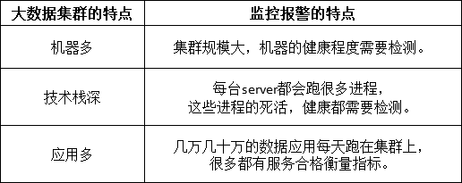
（图示为针对大数据集群的不同特性，监控报警的特点）
像大数据基础设施这种部门，不可能配制专门的测试工程师，那么这么多的机器、服务以及应用要如何很好地运转下去呢？
这就需要一套强大的“自动化监控报警系统”。
这一块，不同的公司应对方案是不同的。大公司、小公司、创业公司，根据自己的实际情况，应该选择对于自己合理的解决方案。已经有很多很好的文章谈过这个问题了，可以参考以下两篇文章：
https://zhuanlan.zhihu.com/p/31285905
https://zhuanlan.zhihu.com/p/30823210
二、监控报警系统发展历史及业务背景
市面上的监控报警系统多种多样，但越是眼花缭乱的市场，越要睁大眼睛，看其本质，剥其筋骨，找一款合适自己的解决方案。
网上有很多讲述公司内部监控报警系统的文章，都提到了自家监控系统的实现，但都是直接讲解了实现的细节，没有讲骨架、背景，我感觉对于新入行的程序员来说会略显生硬，对于想了解监控报警系统内部运作原理的人来说，架构逻辑也不够清晰。
所以，我想写一篇既讲背景，又讲骨架的文章。
首先是背景，我们先来谈谈软件工程。在很早以前，软件开发的技术团队在做迭代开发时，一般是要经历这样的开发流程：
需求分析
原型／功能设计
测试用例设计（Tdd 测试驱动的开发）
开发人员完成功能，部署测试环境
测试按照测试用例做测试
如果在测试时，发现Bug，则回滚给开发重新Fix
如果测试没测试出Bug，则上线生产环境
等线上真正有用户发现了Bug，好心的用户会汇报Bug，联系客服人员
这种流程会导致什么问题呢？
一般简单的“显式”Bug，比如“网站关键页面打不开了”、“网站下单支付功能一直失败”等等这类错误，用户和公司都能在相对的一段时间内发现问题。然后问题被重新整理报修为Bug，修复、回滚。
而一些“隐式”Bug，比如“网站越来越慢了”、“支付功能要30秒才能成功”、“有时成功，有时失败”；“短信验证码在产品上线了一周后，变得要25秒才能发送到客户手机上”。 这类问题，有时并不影响业务逻辑的正常运转，但系统内部肯定是哪里已经出现问题了。有时长期积累下去，会慢慢暴露出更多问题，最后导致核心业务的Down机。有时甚至就是产品性能上线后本身就很差，由于某次上线的“代码/配置”变更导致。这种“隐式”的Bug也会影响用户体验。
测试发现显示Bug，what about隐式Bug？
随着互联网的发展，各大互联网公司对业务稳定、可靠性的要求越来越高。但公司的业务线是越来越多的，测试工程师不可能人肉去干无穷尽的手工测试，每天24小时一直盯着产品。作为公司，更是希望这种隐式的Bug不要由用户报告出来，最好是在内部 “快速”发现问题、“自动”发现问题、要比“用户”早发现问题。这就逼迫开创了了“自动化周期性线上测试”。
“早期的自动化测试”只发生在软件上线之前。比如开发提交了新的功能之后，公司内会有Jenkins这种持续集成工具自动触发去跑测试用例。用例包括开发人员的“单元（白盒）测试”，以及测试人员写的“脚本（黑盒）测试”。要求全部通过之后，方能部署到“生产”环境。这种方式，能发现大部分的“显示”Bug，但是很难发现“隐式”bug。倘若有些程序有内存泄漏，并不会第一时间马上崩溃，可能是跑了一个星期，甚至一个月才产生问题。
“自动化周期性线上测试”，解决隐式的Bug，在产品上线后，持续地针对线上环境的多种指标，进行长期观测，进行规律判断来发现异常。如果有潜在的异常，那么某些监控指标会出现问题。还有一些异常指标在暴露时，如果能第一时间联系到对应产品的“负责人”，马上进行补救，这长期来看，对产品的口碑会有一个很大的提升。比如：一个电商网站的支付页面，响应速度持续地超过5s，远大于长期的平均值（2s），在这种现象连续出现5次时，报警给这一块的研发人员，其发现程序有资源泄漏导致机器变慢，然后先重启了部分服务，保证用户速度提上来，之后马上组织对此功能进行Hotfix，最终解决问题。
三、监控报警系统的通用架构
之前讲了“自动化周期性线上测试”的产生历史原因及背景。看起来，是时代的发展倒逼技术界而产生的“技术更替”。在往后的内容，我们把“自动化周期性线上测试”系统，称为“监控报警”系统。因为它代替了人去“监控”，代替了测试工程师去“报告问题”。
监控报警我认为分为4大块：
收集数据
存储数据（时间序列的存储）
报警规则
报警行为
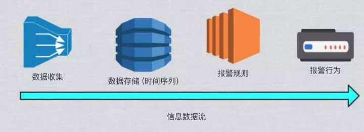
监控报警信息流
这是基本骨架，再细化一下，整个架构图会变成这个样子：
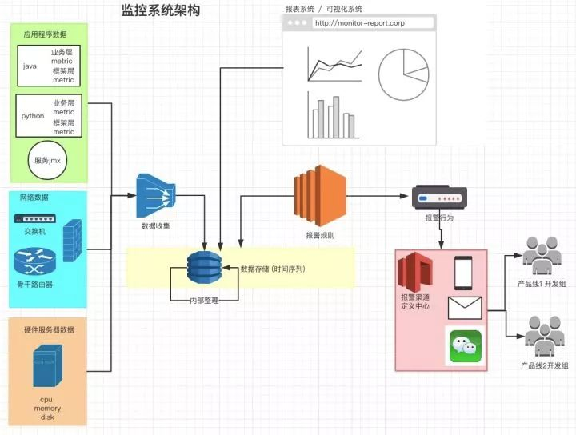
监控报警系统架构图
四、监控报警系统细节分析
收集数据，我想这篇经典的《Measure Anything，Measure Everything》（https://www.tuicool.com/articles/A3AFvu6），是开启了新时代“数据驱动”的监控运维思想的一篇博文，大家可以读一读，这里面讲到的思想，也符合我这一系列文章的主旨：让一切人的决策基于数据。
文章中提到，企业级的监控数据，通常包括下三类：
网络数据。包括骨干交换机，核心交换机等硬件设备；
服务器数据。 包括服务器的CPU、内存、硬盘的各项使用数据；
应用数据。
应用数据是这三者中最难的，但也是最重要的。应用数据是和业务逻辑紧密相关的，业务逻辑变了，应用数据的收集也会变化。
在应用数据这一块，有一个开源项目叫Statsd，他催生了“应用数据收集标准” <github-statsd 应用数据收集标准>。我在这里也简单提一下：
累加值(Counting) gorets：1 | c
服务耗时(Timing) glork：320 | ms | @0.1
指标值(Gauges) gaugor：333 | g
字符串的第一部分，就是 "METRIC"，用冒号隔开的左边是“METRIC_KEY”，右边是“METRIC_VALUE”，竖线右边的部分是“数据类型”。
监控报警的数据，全部都是围绕“监控指标的值随时间变化的趋势”这一目标而设计的。每一项监控指标数据序列都是天然的按“时间排序”的，这是其特点。业界管存储这种数据结构的工具叫“时间序列数据库”。这是一种专有数据库，并非像RDBMS（关系型数据库）是一种通用的SQL-LIKE的数据库。
市面上有很多很多的基于时间序列的数据库，不论其底层的数据结构实现是什么样子，时间序列存储的本质数据结构永远都是：
Map< METRIC_KEY , sortedMap<timestamp, METRIC_VALUE >>
不同的底层实现都是在上面这个数据结构的一些点上有不同的扩展，比如：
s1.在METRIC_KEY的分片逻辑，实现上不同：选取的分片是一致性哈希，还是求余哈希。
s2.SortedMap的实现不同，本质上是一个按Timestamp排序的序列。
s3.读写的偏好略有不同。
在这里我不会着重去讲具体的每一个时间序列的数据库以及其底层数据结构的实现。在技术选型时既要考虑技术的痛点，也需要考虑业务上的痛点，业务场景定下来了，技术选型才能定。那么根据业务场景，又有了其它几个选型点：
s4.Metrics是否会无限增加？
s5.Metrics保留的时间跨度有多长？
s6.上层的业务报警，有多重要？
为了解决技术选型SELECT，s1-s6，我拿一些例子来说明：
Metrics是否会无限增加，保留时长
专有系统，即解决某一特定领域问题的时间序列存储，Metric key不会无限增长。
比如我们管理Hadoop的套件Cloudera-Manager或Hortonworks的Ambari，都有自带的监控报警系统。他们都是把数据存储在本地的磁盘上，相当于是一个本地的数据库。单机版数据库的问题就是受单机硬盘的物理上限限制。
好在Hadoop技术栈的监控指标是有限的、收敛的，且这些数据也大多只需要保留1个月。因此“Hadoop监控系统们”的单机存储空间是可控的。专有系统，一定是服务于一个成熟的“内聚产品”。
通用监控报警系统，Metric key会无限增长。如《Measure Anything，Measure Everything》提到，公司每个业务线Team都会把自己的应用数据发送到统一的指标数据存储中。
随着业务线、监控指标的增长，时间序列存储的压力是无限增加的，且数据的保留时长不定，很有可能是无限长（每个应用都有其特殊性，不可估量）。这就要求底层的数据存储必须支持“无限水平扩展”。
SortedMap实现和读写偏好
SortedMap即全局排序的映射表，它的实现更要由报警监控的实际需求出发了。
专有系统，由于是有限的指标，且搜集数据的频率也不会特别变态的高，那么同一时刻写入的数据量应该是可控的。此时B＋Tree、SkipList都是很好的实现方式。
而通用系统，监控指标会无限增加，有些指标采集需求的频率可达几十毫秒。这么高频的并发写入需求，一般实用lSM Tree来实现。
上层的业务报警，有多重要（HA & 高可用性）
任何时候，监控报警系统都必须可用，必须可以容忍一部分机器挂掉。其不能因为某台机器、某个进程挂掉而导致整个监控报警体系都Down掉。
SPOF :https://en.wikipedia.org/wiki/Single_point_of_failure
监控报警系统是用来“观测公司内部的所有业务是否正常运转”的，所有产品的第一时间救命稻草也就都压在了“监控报警”系统上了。它挂了，公司所有产品出问题都反映不出来了。所以像基于单机版本数据存储的时间序列是不能满足企业级要求的。一定要选择高可用HA（High Available）的数据存储解决方案。
而对于小型创业公司，可以在业务初期和高速增长前期暂时放弃过高的可靠可用性，先使用诸如“磁盘Raid、定期备份、做数据库级别的主从切换”等简单易实施的技术来快速满足轻量级的业务需求。
最后，附上一些时间序列数据库总结引用的论文及文章：
wiki : Time series database
https://blog.outlyer.com/top10-open-source-time-series-databases
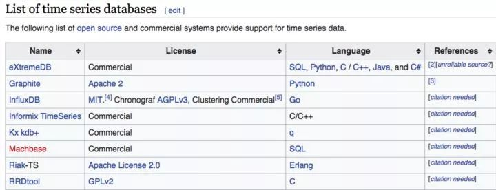
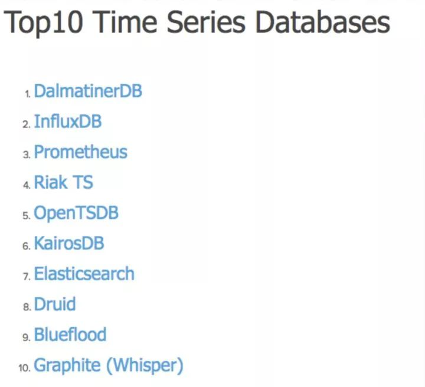
报警规则模块，首先，是天然个性的。为什么呢？按什么规则报警，显然是和每个公司的具体业务绑定的。而规则是基于对历史数据的分析、度量。这牵扯到公司业务的个性化，本篇文章对个性化的业务细节不做过多的赘述。
我们看看看报警规则有哪些通用的技术点：
High-Available的规则周期检查
企业级的应用，最强调的就是高可用HA，必须避免单点故障SPOF。“报警规则模块”发生问题了，仍然会导致“监控报警”系统失效。
一般来说，报警规则都是周期性触发的。因此需要有一个“类Cron Job”的调度器。这类调度系统的HA设计可以参考“Azkaban” 和 “Quartz”。
Azkaban：https://azkaban.github.io/
Quartz：http://www.quartz-scheduler.org/
调度系统的HA设计主要分为“规则数据库的高可用”和“调度Sever的高可用”两方面：
数据库高可用通过Master-Slave的主从实现；
调度Server的高可用，如果有状态，则使用zk／etcd来做高可用；如果无状态，那就启动多个调度服务器好了。根据调度规则，制定一定的分片策略，不算困难。
报警规则定义
在我观察了一系列的监控报警产品后，规约出大致有两种“报警规则”的定义实现方式，一种是基于“规则表达式的”，另一种是基于直接“脚本&编程”的：
基于规则表达式的，在熟悉了表达式语言后，比较容易编写，但灵活性差。在实现复杂的报警规则时比较难，一般适用于简单的报警规则，比如当某一、二个观测指标到达阈值时触发。例如：
Prometheus：Alerting rules | Prometheus
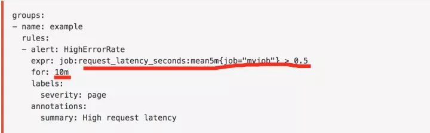
Promethus 基于规则设定报警的例子
还有基于可视化配置规则的，比如Zabbix的Trigger配置：Zabbix Documentation 3.2
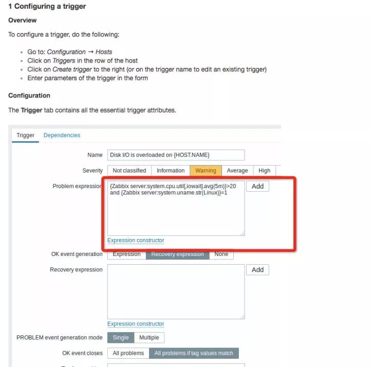
Zabbix 的可视化规则配置
Grafana在4.0之后，也有了基于规则的简单报警功能：Alerting Engine & Rules Guide
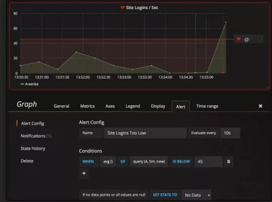
Grafana4.0 基于规则的报警 UI .1
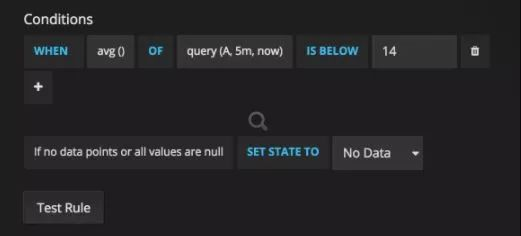
Grafana4.0 基于规则的报警 UI .2
基于“脚本／编程”的，这种类型的规则定义，提供了无限的灵活性。因为“可编程”，就等于可以“do everything”。
但也有一些坏处，比如：又多引入了一个外部依赖：代码管理库，且意味着又要为另一套系统做高可用HA，一般为公司内部的代码管理使用Github／Gitlab；想快速修改报警规则时，流程会相对慢，因为要经过代码的修改，Merge，最后Submit。
报警规则“脚本”定义的例子：
收集两个数据源的数据，根据自定义规则，判断指标是否异常，如果有异常，先进行“重启”行为，缓解线上压力，再发出报警给相关工程师，追查真正原因。
这种稍微复杂的报警规则，用编程脚本的方式实现起来毫无压力，而如果要用基于规则语言的报警，则比较困难，甚至是不可能实现的。
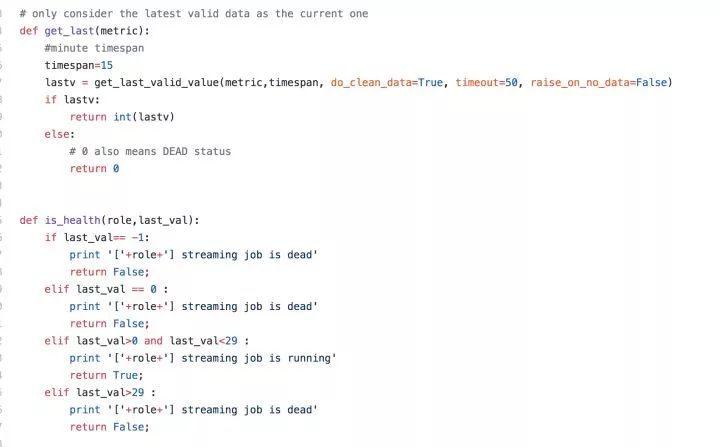
基于“脚本”的报警规则，定义函数
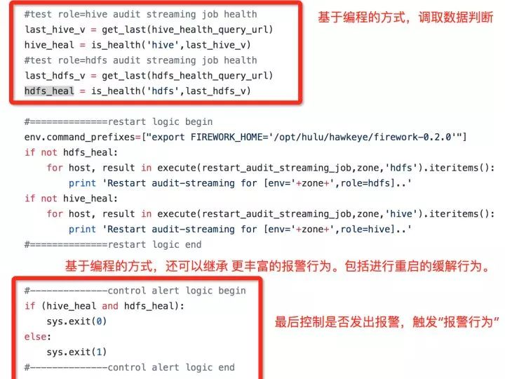
基于“脚本&编程”的报警规则 例子
大家可能会问，报警行为有什么好讲的呢？ 不外乎就是在报警规则触发后，通过电话、微信、短信、邮件等媒介找到正确的负责人，这听起来很简单啊。
好，我们继续把应用场景想的丰富一些：
比如我们的Hadoop架构组，有 HDFS、Yarn、Hive、HBase、Zookeeper、Spark、Presto、Impala、Hue、Cloudera Manager……OK，不要再讲了。这么多组件，一个人能运维的过来吗？是否需要组内的多个人分工呢？ 每个人一个星期？
检测Hadoop Namenode健康的报警每5分钟一次，是否每一次检测失败了都要报警？会不会有误报？第一次异常报警后，工程师已经在排查问题了，这时连续的第二次、第三次检测异常，是否需要连续的打电话去打扰工程师？ 那么，连续几次抑制报警呢？
哪些报警是非常重要的，白天晚上都必须打电话通知；哪些是相对重要的，白天打电话，晚上可以发一封邮件、短信先通知问题；哪些是次要的，可以只发一封邮件的。
有时候检测程序也会因为一些“噪音”产生抖动，比如检测网页打开速度限制在2ms，但是有一次访问就是因为网络链路的抖动达到了50ms，那是否就应该直接报警呢？ 是不是连续3-5次的数据全部超标，确认问题之后再报警呢？
报警行为软件，分为“自研”和“第三方”两条路。
自研开发，这条路适合有强大复杂报警行为规则的大公司。包括报警行为规则的复杂和报警媒介的复杂两方面。每一家公司使用的内网办公聊天软件、邮件系统可能都不一样，都会有独特的场景需要集成。每一家公司、每一个组的报警行为可能也不一样，有的要7*24小时，有的只需要白天发封邮件，有的甚至只需要在工作日的白天发封邮件。
第三方软件，中小型公司，创业公司，更适合使用第三方软件。目前据我了解，湾区的公司，大多使用Pagerduty，可参考链接了解详情：https://www.pagerduty.com/，而这款产品并没有做中文的本地化，本土的软件，还没有一款杀手级的存在于市场。我找了一圈，找到了Oneapm公司的One-Alert（http://www.110monitor.com/），我试了试Demo还不错，打算试试看。个人意见，觉得这一块的需求会越来越大，希望国内能有靠谱像样的公司做起来，共同推进国内的“监控报警”市场发展。
五、总结
我整理了一张表，描述常见的“监控报警”领域的开源产品，落在哪个区间：
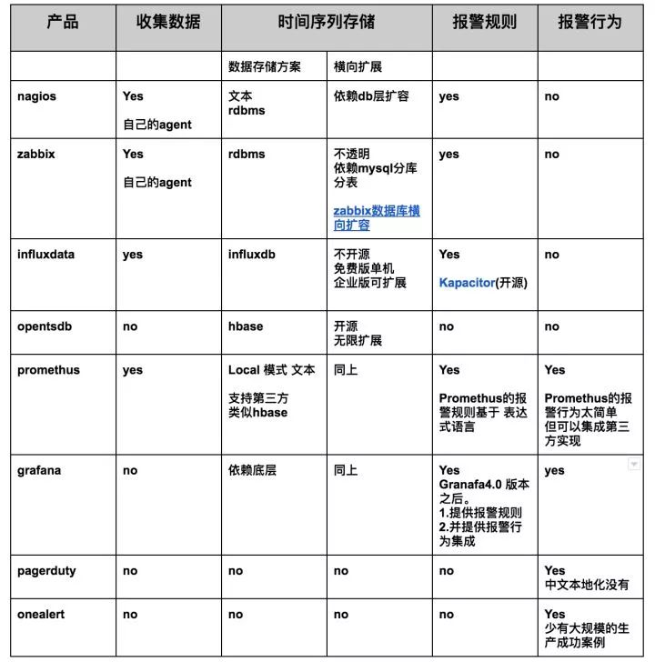
在做技术选型时，一定要看的长远，多想想未来的需求，不能只着眼于快速交付。同时，也希望国内能有专注于“报警行为”的公司出现。
有一点不明白，备机是新机器，能直接通过gprecoverseg…
在很多场景，分布式数据库就是来代替关系型数据库。关…
多于多表关联，表又非常大适用吗？
写的不错， 学到了。
写的真好